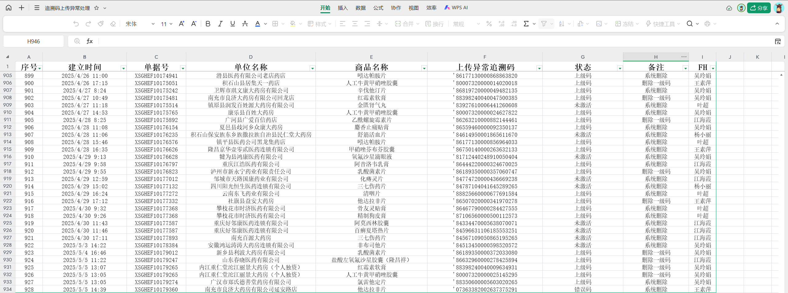
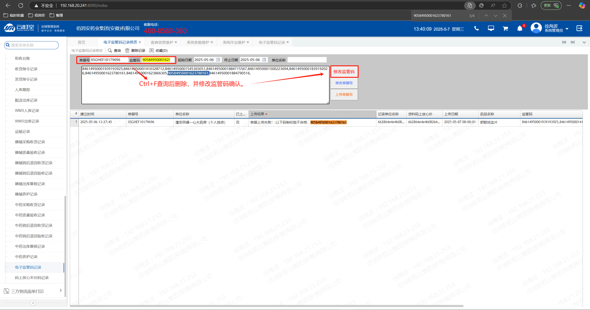
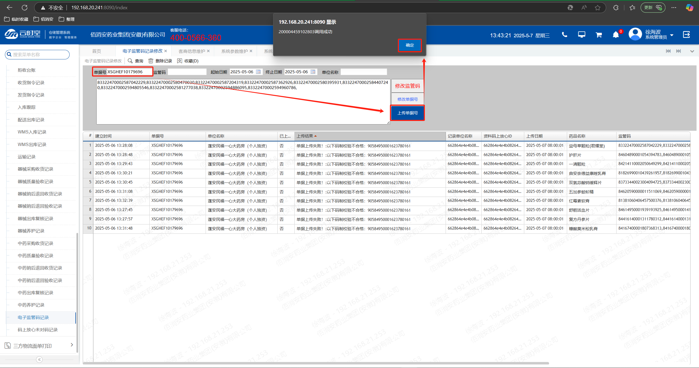
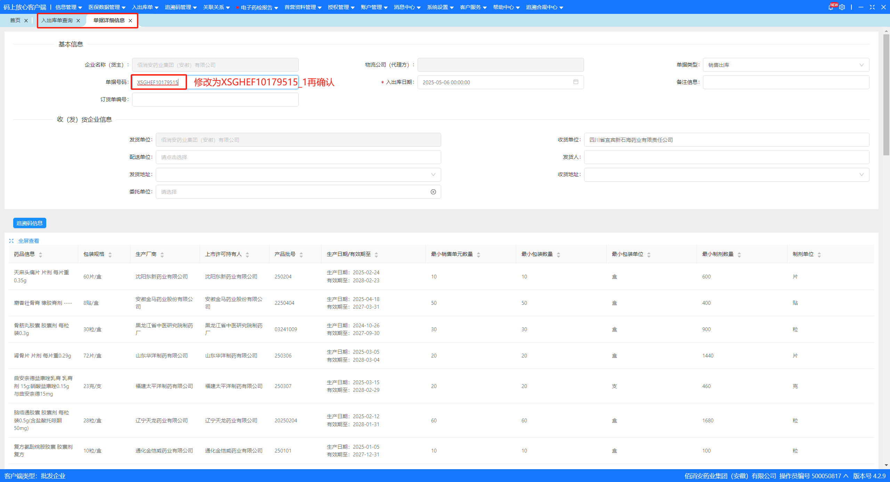
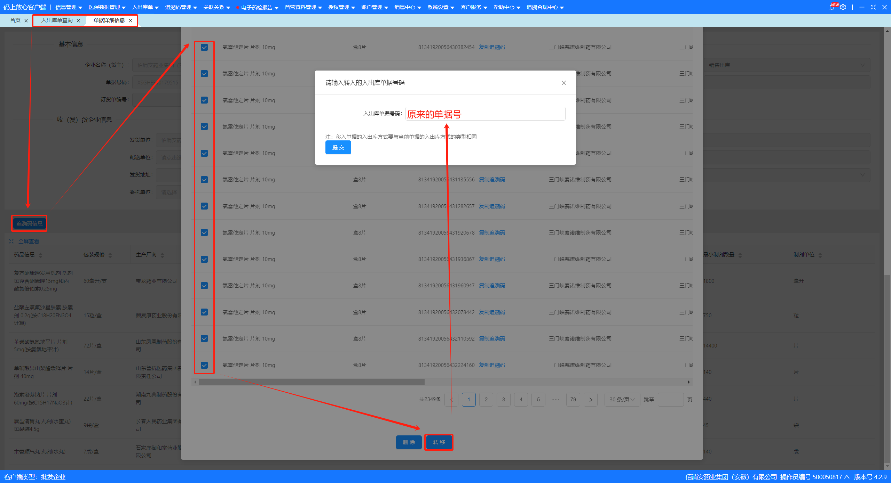

其他问题处理
追溯码上传异常处理
每日上午8:00WMS会自动上传追溯码到码上放心平台，其中会出未激活的码、不合格的码、上下级关系的码以及监管客户未对码等问题，导致单据未上传到码上放心平台，客户不能及时接受到追溯码影响客户体验的问题。以下是每个问题的解决方案：
1、未激活的码、不合格的码
上传结果提示：
单据上传失败！：存在未激活的码:84513450000598520572共1个码
单据上传失败！：以下码制校验不合格：90584950001623780161
首先需要在 追溯码上传异常处理 登记未激活的、不合格的码对应的商品名称、单位名称、单据号、建立时间、复核员、上传失败的原因，然后在“电子监管码记录修改”里查询此码并删除，最后重新查询此单再上传单据号。


2、上下级关联的码
上传结果提示：
单据上传失败！：有上下级关联码：[84112740002781421895（ 下级 ）, 86219380002249061490（ 上级 ）]；
若上下级码的数量是对应关系则只需要保留上级码即可（ 末尾需要加英文状态下的 “ , ” ），反之只需删除上级码。

3、客户未对码
上传结果提示：
空白

首先在码上放心平台查询是否添加此客户，然后再重新对码，最后运行定时任务重新上传单据，若查询不到信息需反馈给质管部。


4、上传重复单据
上传结果提示：
单据上传失败！：单据号上传重复错误，请更改单据号
可以把码上放心平台里的单据号修改一下，如：XSGHEF10179515 → XSGHEF10179515_1，再重新上传单据号。
若客户只需要一个单据号，可以把码转移到原来的单据号中。入出库单查询 → 详情 → 单据详细信息 → 追溯码信息 → 全选 → 转移 → 提交。
